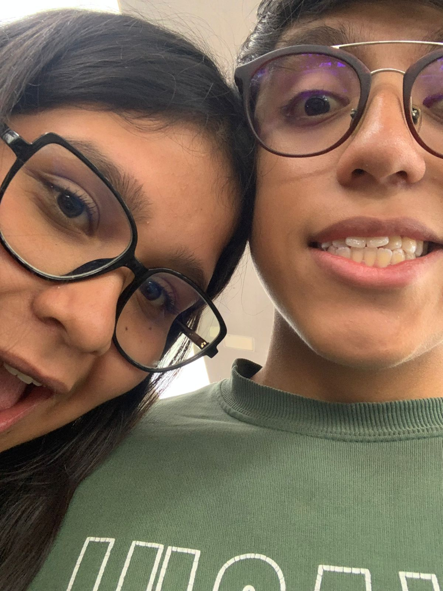
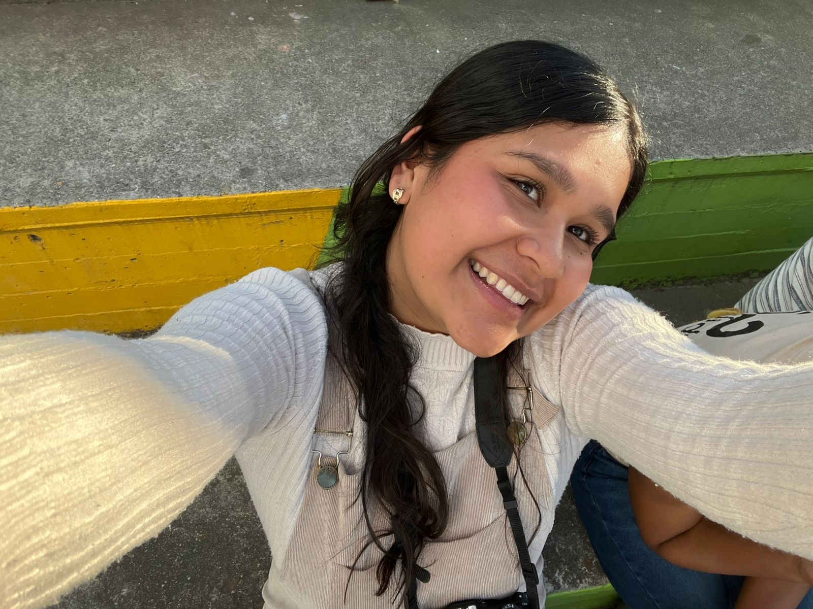
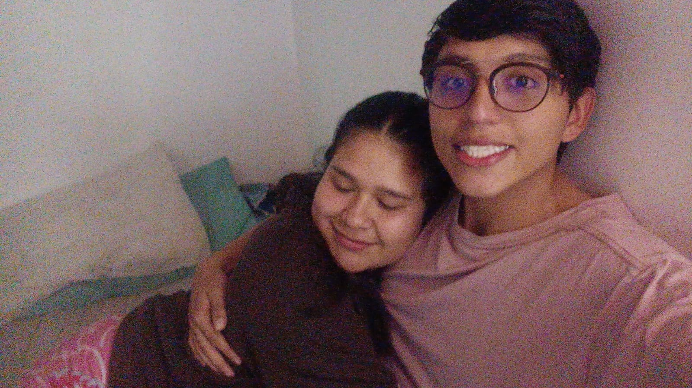
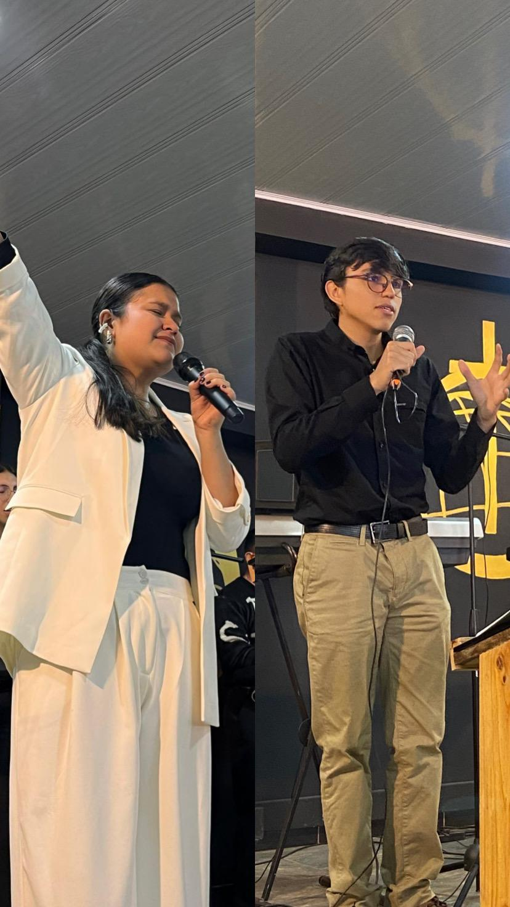

Para Silvia Tatalia, con todo mi amor.
Hoy cumplimos 5 meses juntos y quise hacer algo distinto, lo hice con mucha paciencia y amor. Espero que te guste.
Ver al amor de mi vida en su versión más niña, pequeñita y chiquita que puedo conocer, ver qué aún esa niña sale a la luz cuando se emociona.

Creo que teníamos muchos nervios ambos, pero salió uno de los momentos más lindos, tú recostada en mi hombro mientras esperabamos el bus.

Esta foto me causa mucha ternura no lo puedo negar, ese día sentí que una niña estaba enamorada de mí.

Ese abrazo es el que quiero cada mañana de mi vida, me siento cómodo cuando estoy junto a ti.

Solo puedo decir que verte hablar de mi Dios me hace saber que estoy con la mujer indicada.

Pensar que hace unos meses... esto no significaba nada para mí. Y ahora no puedo verlo sin pensar en ti.
Una carta de amor para ti...
Amor..
Estos 5 meses han sido sin duda los mejores de mi vida
5 meses llenos de alegria y felicidad a tu lado
que se han sentido demasiado rapidos en comparación a como pasa el tiempo.
Pero son, los primeros 5 meses junto al amor de mi vida.
Gracias por llegar a mi vida princesa, has sido una ayuda para mí.
Tengo a la mejor novia del mundo a mi lado, no sabes lo feliz que me haces.
Para finalizar solo tengo que decirte que gracias por estos 5 meses,
en esta navidad, año nuevo y nuestro quinto mes,
agradezco mucho a Dios por tu vida y por lo que haces en la mía,
gracias por ser esa mujer hermosa y valiente,
fuerte pero tan indefensa, una mujer que tiene una capacidad única
conmover de tal manera mi corazón
la mujer capaz de hacerme llorar y reír
la única mujer que me ha conocido completamente tal cual soy,
la mujer de mi vida, esa eres tú mi cielo,
felices 5 meses, espero poder caminar toda una vida contigo
y sobre todo de la mano de Dios tu y yo.
No podría estar más agradecido con Dios por la mujer que escogió para mí.
La mujer de mis sueños hecha realidad.
Estoy completamente seguro que podremos pasar las pruebas y dificultades que esto conlleve,
porque no estamos solos los dos,
alguien va con nosotros, te amo mucho amor de mi vida.
Gracias por ser tan tú.